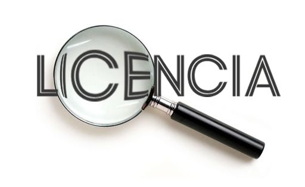

Las licencias de software libre antes de 1980 fueron generalmente
estatutos informales escritos por los propios desarrolladores.
En esa época de compartir el software era común en las comunidades
de desarrolladores y había incluso preguntas sobre si la ley de copyright
se aplicaban al software, así que las licencias no se escribían desde
un punto de vista que uno tuviese que defender en un juzgado.
Copyleft todavía no había sido inventado, estas primeras
licencias eran de tipo permisivo.
 Una licencia de software libre es un un impreso que otorga al receptor de una pieza de software derechos extensivos para modificarla y redistribuir ese software. Estas acciones normalmente se prohíben por las leyes de copyright, pero el que posee los derechos, normalmente el autor de una de un trozo de software, puede eliminar esas restricciones acompañando al software con una licencia de software que otorgue al receptor de estos derechos. El software que usa tales licencias se denomina software libre y esas libertades las concede el propietario del copyright. Las licencias de software libre se aplican tanto a el software en forma de código fuente o en código objeto binario, ya que las leyes de copyright reconocen ambas formas.
Existen diferentes licencias de software libre, la más utilizada es la licencia
GNU GPL
(General Public License),
AGPL (Affero General Public License),
BSD (Berkeley Software Distribution)
MPL (Mozilla Public License)
Licencias Creative Commons: su definición se basa en cuatro condiciones:
. ‘Atribución’, con la cual se puede distribuir, exhibir, representar… siempre y cuando se reconozca y se cite a su autor
. ‘No comercial’, que no permite usar el software con fines comerciales
. ‘No derivadas’, con la cual no se puede modificar dicha obra
. ‘Compartir igual’, que incluye la creación de obras derivadas siempre que mantengan la licencia original.
Bajo las licencias Creative Commons, existen otros tipos de licencia las cuales se diferencian entre sí con el “juego” de la combinación de las cuatro condiciones que acabamos de ver.
Los paquetes de licencias de software que contienen explicaciones contradictorias, hacen imposible combinar el código de estos paquetes para crear nuevos paquetes de software. La compatibilidad de licencias entre una licencia copyleft y otra licencia es a menudo una compatibilidad de un solo sentido. La característica de esta compatibilidad es criticada por la Fundación Apache, que ofrece la ciencia permisiva Apache que no tiene esta característica. Las licencias que no son copyleft como la FOSS tienen menos problemas de compatibilidad. Por ejemplo si una licencia dice que las versiones modificadas deben mencionar a los desarrolladores en cualquier material de marketing, y otra dice que las versiones modificadas no pueden contener atribución adicional, entonces si alguien combina un paquete de software que usa una licencia con un paquete de software que usa la otra entonces sería imposible satisfacer la combinación porque estos requisitos son contradictorios y no se pueden completar a la vez, estos dos paquetes serían incompatibles. Cuando hablamos de las licencias de copyleft, ellas no son necesariamente compatibles con otras licencias de copyleft, incluso la versión 2 de la GPL por sí misma no es compatible con la versión 3 de la GPL.